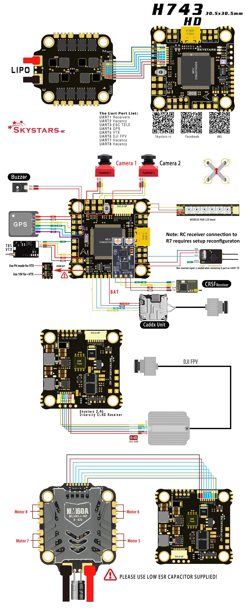

Skystars H7 HD¶
{kind=link}
Where to Buy¶
Available from Skystars RC
Specifications¶
Processor
STM32H743 32-bit processor
AT7456E OSD
16 MByte flash for logging
Sensors
BMI270 IMU (accel and gyro only, no compass)
BMP280 barometer
Power
3S - 6S Lipo input voltage with voltage monitoring
10V, 3A BEC for powering Video Transmitter with power switch
Interfaces
8x PWM outputs, BiDir DShot capable
8x UARTs/serial for GPS and other peripherals
1x I2C port for external compass or airspeed
USB-C port
Switchable VTX power
All UARTS support hardware inversion. SBUS, SmartPort, and other inverted protocols work on any UART without “uninvert hack”
External current monitor input
Pinout¶
Pin |
Function |
|---|---|
10V |
Selectable 5V/10V for HD System or other VTX, by default ON/OFF is controlled by RELAY2. See Relay Switch Can be controlled by RELAY2 |
SDA, SCL |
I2C connection (for peripherals) |
5 |
5v output (1.5A max) |
3v3 |
3.3v output (0.25A max) |
C1 |
Video input from FPV camera1 |
C2 |
Video input from FPV camera2 |
VTX |
Video output to video transmitter |
CAM |
To camera OSD control |
OSD |
GPIO output |
G or GND |
Ground |
RSI |
Analog RSSI (0-3.3v) input from receiver |
R1, T1 |
UART1 RX and TX, normally RC input |
R2, T2 |
UART2 RX and TX |
R3, T3 |
UART3 RX and TX, RX3 normally ESC telem input |
R4, T4 |
UART4 RX and TX, normally GPS |
R5, T5 |
UART5 RX and TX |
R6, T6 |
UART6 RX and TX (UART6 RX is also located in the DJI GH plug) |
R7, T7 |
UART7 RX and TX |
R8, T8 |
UART8 RX and TX |
L |
WS2182 addressable LED signal wire |
RSSI |
Analog RSSI input (ArduPilot pin 13) |
BB- |
Piezo buzzer negative leg |
BB+ |
Piezo buzzer positive leg |
ESC Port 1¶
Pin |
Function |
|---|---|
GND |
Ground |
BAT |
Battery positive voltage (3S-6S) |
M1 |
Motor signal output 1 |
M2 |
Motor signal output 2 |
M3 |
Motor signal output 3 |
M4 |
Motor signal output 4 |
R3 |
UART3 RX |
CURT |
Current sesonr input |
DJI Port¶
Pin |
Function |
|---|---|
10V |
Selectable 5V/10V for HD System or other VTX, by default ON/OFF is controlled by RELAY2. See Relay Switch Can be controlled by RELAY2 |
GND |
Ground |
TX6 |
UART6 TX |
RX6 |
UART6 RX |
GND |
Ground |
RX1 |
UART1 RX (used for SBUS or other RC input) |
UART Mapping¶
The UARTs are marked Rn and Tn in the above pinouts. The Rn pin is the receive pin for UARTn. The Tn pin is the transmit pin for UARTn.
SERIAL0 -> USB
SERIAL1 -> UART1 (default RC protocol, DMA-enabled)
SERIAL2 -> UART2 (DMA-enabled)
SERIAL3 -> UART3 (default ESC Telem protocol)
SERIAL4 -> UART4 (default GPS protocol, DMA-enabled)
SERIAL5 -> UART5 (User)
SERIAL6 -> UART6 (default protocol DJI Goggles, DMA-enabled)
SERIAL7 -> UART7 (DMA-enabled)
SERIAL8 -> UART8
Any UART may be re-tasked by changing its protocol parameter.
RC Input¶
RC input is configured on the R1 (UART1_RX) pin. It supports all RC protocols except PPM. See Radio Control Systems for details for a specific RC system. SERIAL6_PROTOCOL is set to “23”, by default, to enable this.
SBUS/DSM/SRXL connects to the R1 pin.
FPort requires connection to T1 and SERIAL6_OPTIONS be set to “7”.
CRSF also requires a T1 connection, in addition to R6, and automatically provides telemetry. Set SERIAL6_OPTIONS to “0”.
SRXL2 requires a connecton to T1 and automatically provides telemetry. Set SERIAL6_OPTIONS to “4”.
Any UART can be used for RC system connections in ArduPilot also, and is compatible with all protocols except PPM. See Radio Control Systems for details.
OSD Support¶
The autopilot has an integrated OSD using OSD_TYPE 1 (MAX7456 driver). The defaults are also setup to allow DJI Goggle OSD support on UART6.
PWM Output¶
The autopilot supports up to 8 PWM outputs. Outputs 1-4 are available via a JST-SH connector. All 8 outputs support DShot and bi-directional DShot, as well as all PWM types.
The PWM is in 3 groups:
PWM 1, 2 in group1
PWM 3, 4 in group2
PWM 5, 6 in group3
PWM 7, 8 in group4
PWM 9 (LED) in group5
Channels within the same group need to use the same output rate, whether PWM or Dshot. If any channel in a group uses DShot then all channels in the group need to use DShot.
LED Output¶
The LED output is configured by default to support NeoPixel LED strings.
VTX Voltage Selection/Control¶
A solder jumper pad (VTX+)is provided to allow selection of 5V or 10V output to the “10V” pads. Another solder pad (Jp) selects if the supply is always on or switchable for Pit mode operation.
If configured for switchable operation, set RELAY_PIN = 81 to control on or off with RELAY1 in ArduPilot
Camera Selection¶
Two camera inputs are provided. C1 is selected by default. In order to switch to camera 2 (C2), set RELAY_PIN2 = 82 to allow RELAY2 to control selection of cameras.
GPIO Output¶
An additional GPIO output is provided via the OSD pin. It can be controlled by setting RELAY_PIN3 = 82 and using RELAY3 to change its level.
Battery Monitoring¶
The board has a built-in voltage sensor via the B+ pin, but no internal current sensor. An external current sensor can be connected to the CUR pin. Default parameters for both internal voltage and external current monitoring are set by default to the below for use with any Holybro Tekko32 F4 4in1 ESC.
The correct battery setting parameters are:
BATT_VOLT_MULT 11.1
BATT_AMP_PERVLT varies depending on external current sensor
Compass¶
The autopilot does not have a built-in compass, however you can attach an external compass using I2C on the SDA and SCL pads.
Firmware¶
Firmware for this board can be found here in sub-folders labeled “SkystarsH7HD-bdshot”.
Loading Firmware¶
Initial firmware load can be done with DFU by plugging in USB with the bootloader button pressed. Then you should load the “with_bl.hex” firmware, using your favourite DFU loading tool.
Once the initial firmware is loaded you can update the firmware using any ArduPilot ground station software. Later updates should be done with the *.apj firmware files.
[copywiki destination=”plane,copter,rover,blimp”]